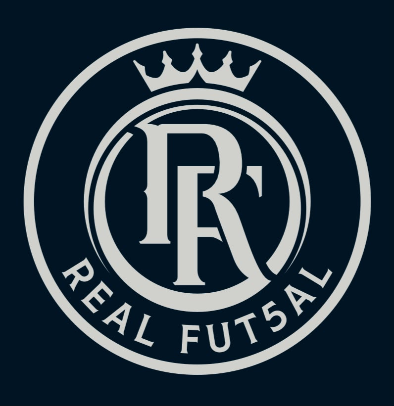
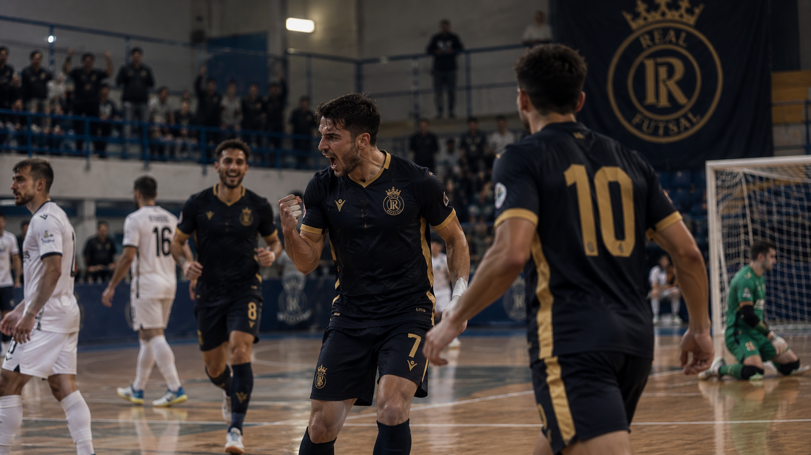
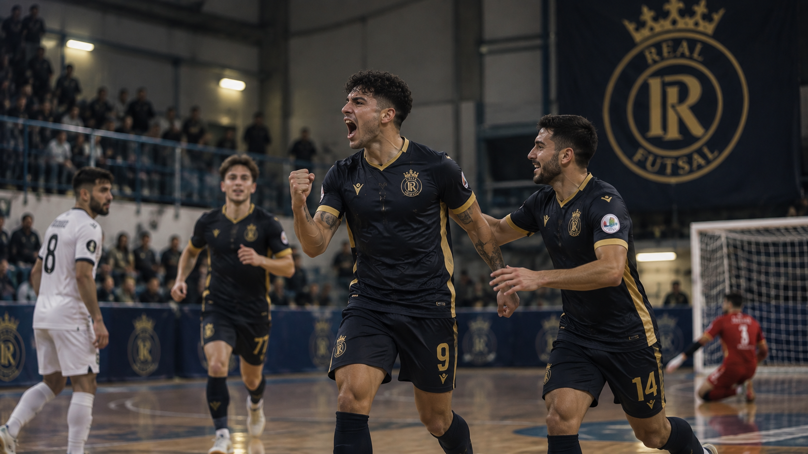
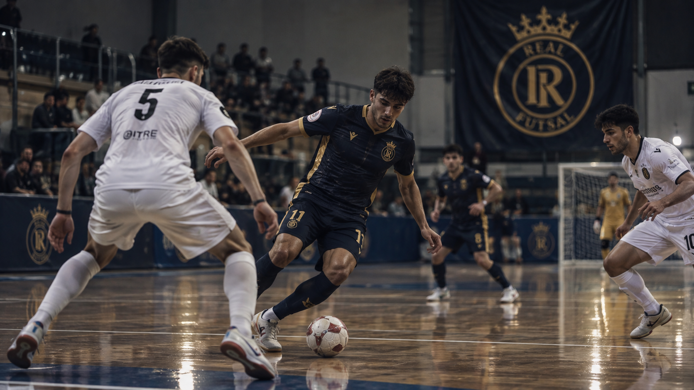
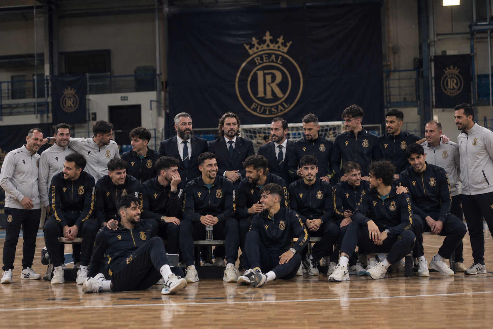

Stagione 2026/2027
Stagione 2026/2027Siamo Tornati: al via la stagione 2026/2027
Parte una nuova stagione. Torna il dirigente Emanuele Paolella per inseguire il primo Scudetto FSSI della storia del club. «La storia continua».
Leggi su Sporticily →
 •
•
 •
•

Aggiornamenti dal mondo Real Fut5al: stagione, competizioni e appuntamenti.
Stagione 2026/2027Parte una nuova stagione. Torna il dirigente Emanuele Paolella per inseguire il primo Scudetto FSSI della storia del club. «La storia continua».
Leggi su Sporticily →
vs CD Huelva · 4-2A Montesilvano Real Fut5al batte gli spagnoli dell'Huelva e conquista la prima edizione della Champions League del futsal sordi.
Scopri il palmarès →
vs Audiofutsal Milano · 5-3Il club alza nuovamente la Coppa Italia sordi, confermando il proprio dominio anche in ambito nazionale.
Tutti i trofei →
Guimarães · PortogalloDal 15 al 20 marzo 2027, in Portogallo, Real Fut5al difende il titolo di Deaf Champions League.
La cronologia →
Campionato FSSI 2026/2027Mai conquistato in passato: il primo Scudetto FSSI è la grande ambizione della stagione che comincia.
La squadra →
Dirigenza · PaolellaNessuna cessazione dell'attività: il club riparte su basi molto solide con il ritorno in dirigenza di Paolella.
Fonte: Sporticily →